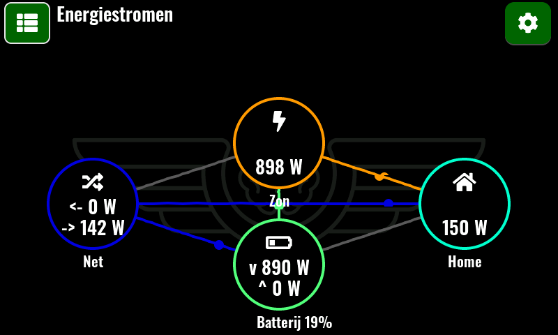
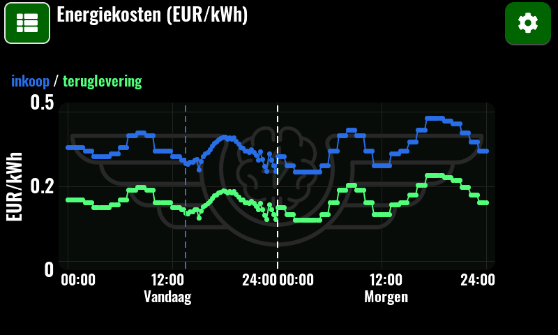
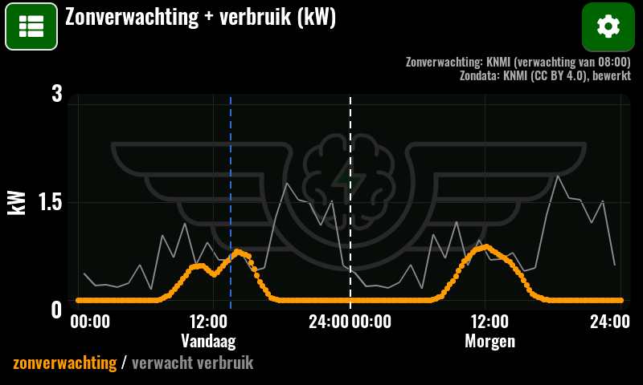
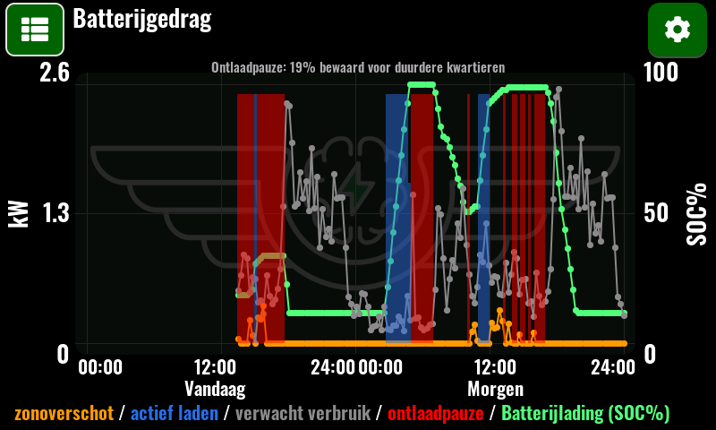
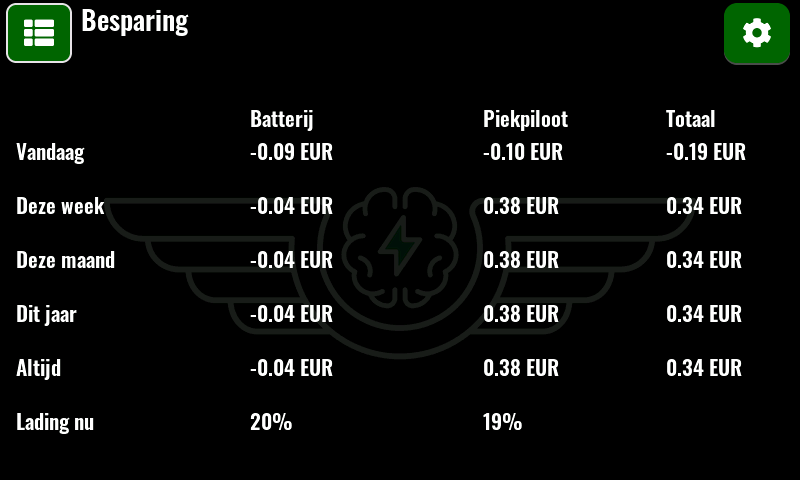
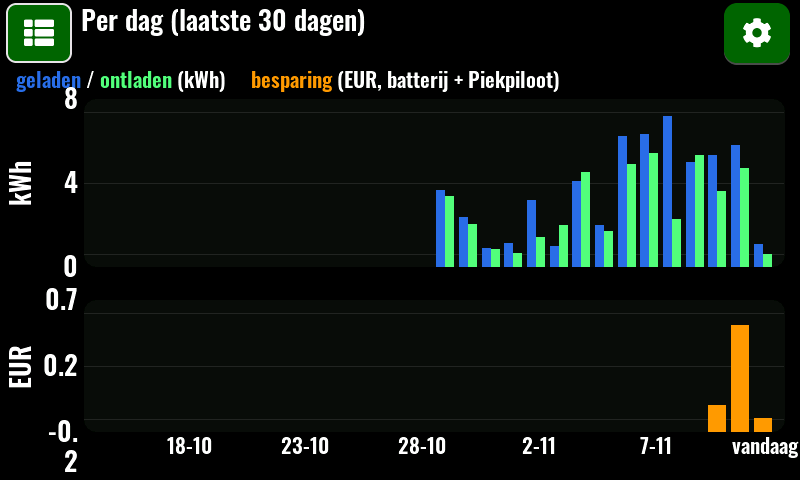

Piekpiloot
Het brein voor je thuisbatterij. Een kastje met aanraakscherm dat je batterij laadt als stroom goedkoop is en de lading bewaart voor de dure momenten. Gemaakt voor een dynamisch energiecontract.

Hoe werkt het?
Elke 5 minuten maakt de Piekpiloot een nieuw plan per kwartier, voor de rest van vandaag en morgen. Daarvoor kijkt hij naar:
Stroomprijzen
De dynamische kwartierprijzen van vandaag en morgen.
Zonverwachting
Hoeveel je zonnepanelen naar verwachting opwekken.
Jouw verbruik
Wat je huis per kwartier gewoonlijk verbruikt.
Live meting
Wat er nu het net in en uit gaat, via je P1-meter.
Zo ziet het eruit
Schermafbeeldingen van het 4,3"-aanraakscherm. Dezelfde informatie staat ook op een eigen webpagina van het kastje in je thuisnetwerk.






Wat de batterij doet
Gewoon zelf verbruiken
De batterij levert wat je huis verbruikt en laadt met zonne-overschot.
Laden als het goedkoop is
In goedkope kwartieren van het net laden, maar alleen als dat na verlies en slijtage echt iets oplevert.
Lading bewaren
Tijdens goedkope uren de lading vasthouden voor een duurder moment. Zonne-overschot wordt wel geladen.
Waarom de Piekpiloot
Volledig lokaal
Geen cloud, geen account, geen abonnement. De Piekpiloot praat alleen met je eigen batterij en meter, en haalt prijzen en zonverwachting op via internet.
Geen Home Assistant nodig
Geen server, Raspberry Pi of Home Assistant nodig. De Piekpiloot werkt helemaal zelfstandig: aansluiten op stroom en WiFi, en klaar.
Eerlijke besparing
De besparing wordt gemeten tegen een batterij die gewoon op Auto zou staan. Zo zie je wat de slimme sturing echt extra oplevert.
Veilig terugvallen
Bij twijfel gaat de batterij terug naar haar eigen automatische stand.
Makkelijk installeren
Instellen via het aanraakscherm: WiFi, batterij, P1-meter en zonnepanelen. Daarna draait hij vanzelf.
Alles in beeld
Energiestromen, prijzen, verbruik, zonverwachting, het batterijplan en de besparing. Op het scherm en in je browser.
Veilige updates
Alleen ondertekende updates, met een zelftest. Mislukt er iets, dan gaat hij terug naar de vorige versie.
Werkt met
- Thuisbatterij: Marstek Venus E 3.0
- Slimme meter: HomeWizard P1-meter
- WiFi (2,4 GHz)
- Een dynamisch energiecontract (prijs per kwartier of per uur)
Meer heb je niet nodig: geen Home Assistant, geen server en geen abonnement.
Andere batterijen en meters volgen later. Meer antwoorden staan bij de veelgestelde vragen.
Stand van zaken
De alfatest is afgerond: de Piekpiloot stuurt sinds oktober 2026 dagelijks een echte thuisbatterij aan. De volgende stap is een beta-test in andere huizen. De Piekpiloot is nog niet te koop.